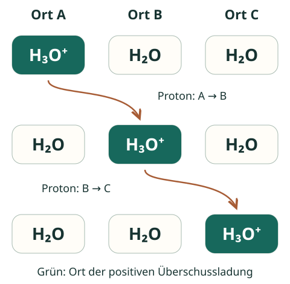

1. Warum fallen H₃O⁺ und OH⁻ auf?
Bei gleicher Ionenkonzentration und Temperatur leisten H₃O⁺ und OH⁻ in verdünnten wässrigen Lösungen einen ungewöhnlich großen Leitfähigkeitsbeitrag gegenüber vielen anderen einfach geladenen Ionen. Ihre Ladung ist dabei nicht größer: Alle drei Ionen H₃O⁺, OH⁻ und Na⁺ tragen jeweils den Ladungsbetrag einer Elementarladung.
Der Unterschied liegt im Transport der Ladung. Zur Bewegung der hydratisierten Teilchen kommt bei H₃O⁺ und OH⁻ ein weiterer Weg hinzu: Protonen werden zwischen benachbarten Teilchen im Netzwerk der Wasserstoffbrücken übertragen. Dies bezeichnet man als Grotthuß-Mechanismus.
2. Positive Ladung weitergeben
Ein H₃O⁺-Ion überträgt ein Proton auf ein benachbartes Wassermolekül. Am ersten Ort entsteht H₂O, am zweiten H₃O⁺. Bei weiteren Übertragungen verlagert sich der Ort der positiven Überschussladung.

Die Ladung kann sich dadurch weiterverlagern, ohne dass ein bestimmtes H₃O⁺-Teilchen den ganzen Weg durch die Lösung wandert. Ein frei umherfliegendes „nacktes“ H⁺ wird für dieses Modell nicht benötigt.
3. Negative Ladung durch Protonenaufnahme verlagern
Ein OH⁻-Ion kann von einem benachbarten H₂O ein Proton aufnehmen. Aus dem bisherigen OH⁻ wird H₂O; am Nachbarort bleibt OH⁻ zurück.
A und B kennzeichnen nur die Orte beziehungsweise Sauerstoffzentren; sie sind keine Bestandteile der chemischen Formeln. Der Pfeil zeigt einen einzelnen möglichen Übertragungsschritt.
Hier wird ein Proton von B nach A übertragen, während sich der Ort der negativen Ladung von A nach B verschiebt. So kann auch die negative Ladung durch aufeinanderfolgende Übertragungen transportiert werden.
4. Was das Modell erklärt – und vereinfacht
Die Wassermoleküle bewegen und drehen sich ständig; ihre Wasserstoffbrücken ändern sich. Die gerade Reihe im Bild ist deshalb ein Erklärmodell, keine starre Leitung im Wasser. Ohne elektrisches Feld ergibt sich daraus kein anhaltender gerichteter Strom. Im Feld kommt zum ungeordneten Geschehen ein gerichteter Ladungstransport hinzu.
Hohe Beweglichkeit allein genügt nicht für eine hohe Leitfähigkeit der gesamten Lösung. In sehr reinem Wasser sind die Konzentrationen von H₃O⁺ und OH⁻ sehr klein. Seine Leitfähigkeit bleibt daher gering. Mehr dazu in 1.1.
Kurz selbst erklären
Erkläre ohne Blick auf den Text: Warum ist „H₃O⁺ ist einfach ein besonders kleines Ion, das schnell durch das Wasser fliegt“ keine ausreichende Erklärung?
Erklärung zum Vergleichen
H₃O⁺ ist in ein dynamisches Netzwerk aus Wassermolekülen eingebunden. Sein besonderer Leitfähigkeitsbeitrag entsteht wesentlich durch Protonenübertragungen und die damit verbundene Verlagerung der Überschussladung. Dazu kommt die Bewegung der hydratisierten Teilchen. Das einfache Bild eines kleinen, allein durch die Lösung wandernden Ions erfasst diesen zusätzlichen Transportweg nicht.
Fachliche Quellen und Modellgrenzen
- Hassanali et al. (2013): Proton transfer through the water gossamer – Primärforschung zur Kopplung von Protonenübertragung und Wasserstoffbrückennetzwerk.
- Agmon et al. (2016): Protons and Hydroxide Ions in Aqueous Systems – fachlicher Hintergrund zu beiden Transportmechanismen.
- NIST: Primary Standards and Standard Reference Materials for Electrolytic Conductivity, Abschnitt 1.3 – kleine Ionenkonzentrationen und geringe Leitfähigkeit reinen Wassers.
Eigene Erklärung und eigene schematische Abbildung. Das Schulmodell zeigt benachbarte Protonenübertragungen; räumliche Solvathüllen, kurzlebige Zwischenstrukturen und die komplexe Dynamik des Wassernetzwerks werden nicht vollständig dargestellt.